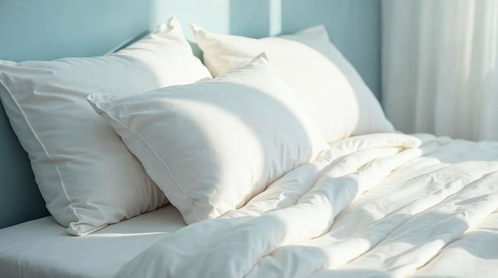

이종호 한의사 감수좋은꿈참사랑한의원 대표원장 (한의사 면허번호 19769)발행 2026-11-26 · 수정 2026-11-26
이 글의 차례
새벽 세 시, 또 눈이 떠집니다. 화장실에 다녀와 누웠는데 잠은 다시 오지 않고, 아까 본 소변도 시원하지 않았던 것 같습니다. 낮에도 소변 줄기가 예전 같지 않고, 공중화장실에서 옆 사람보다 한참 서 있게 되는 것이 은근히 신경 쓰입니다. 장거리 버스를 탈 일이 생기면 출발 전부터 화장실 걱정이 앞섭니다.
전립선 비대는 나이가 들면서 전립선이 커져 소변이 지나는 길을 누르는 상태를 말합니다. 중년 이후 남성에게 아주 흔하며, 나이가 들수록 겪는 분이 늘어난다고 알려져 있습니다. 전립선이 커진 정도와 불편의 크기가 꼭 일치하지는 않아서, 사람마다 겪는 모습이 다릅니다.
진료실에서 이런 말씀을 자주 듣습니다. "비뇨기과 약을 먹고는 있는데, 밤에 깨는 건 여전해요." 약으로 소변 줄기가 한결 편해진 분도 계시지만, 밤잠과 피로, 아랫배의 묵직함이 남아 있다는 분도 많습니다. 저는 그 남은 부분을 생활과 몸 전체의 상태에서 함께 살피고자 합니다.
이 글은 전립선 비대 진단을 받았거나, 그런 말을 들을까 걱정되는 분들을 위한 글입니다. 전립선의 크기와 소변 흐름을 확인하고 약을 정하는 일은 비뇨의학과의 몫입니다. 저는 그 진료를 바탕에 두고, 하루의 물과 술, 잠, 앉는 습관, 몸의 냉기를 어떻게 돌볼지 이야기하겠습니다.
왜 전립선이 커질까요
전립선은 방광 바로 아래에서 소변이 나가는 길, 즉 요도를 도넛처럼 감싸고 있는 작은 기관입니다. 정액의 일부를 만드는 일을 합니다. 이 자리 때문에 전립선이 커지면 요도가 눌려 소변이 잘 나가지 못하게 됩니다.
전립선은 나이가 들면서 서서히 커지는 경향이 있습니다. 남성 호르몬의 변화가 관련되어 있다고 알려져 있고, 뱃살이 많고 혈당과 혈압이 높은 대사 상태와도 함께 가는 경우가 많다는 보고가 있습니다. 그래서 저는 전립선 이야기를 하면서도 체중과 혈당, 혈압, 움직임을 함께 여쭙습니다.
요도가 눌리면 방광은 소변을 내보내기 위해 더 세게 힘을 줘야 합니다. 이런 일이 오래 이어지면 방광 벽이 두꺼워지고 예민해져, 조금만 차도 마려운 느낌이 들게 됩니다. 소변 줄기가 약한 불편과 자주 마려운 불편이 함께 오는 까닭입니다.
한의학에서는 소변이 시원하게 나오지 않고 방울방울 떨어지는 모습을 융폐(癃閉)라 불렀고, 나이 들어 아래쪽 기운이 약해지며 생기는 모습으로 보아 왔습니다. 아랫배와 허리가 차고 밤에 소변이 잦은 경우, 아랫배가 묵직하게 뭉친 듯한 경우를 나눠 살폈습니다. 그래서 저는 아랫배의 온도와 몸 전체의 기운을 함께 봅니다.
증상, 두 갈래로 나눠 봅니다
소변이 잘 안 나오는 쪽
소변 줄기가 가늘고 약하다, 처음 나오기까지 한참 기다려야 한다, 중간에 끊겼다 다시 나온다, 다 본 뒤에도 방울방울 떨어진다, 시원하지 않고 남은 느낌이 있다. 요도가 눌려 생기는 불편입니다.
소변을 자주 보고 싶은 쪽
낮에 소변을 자주 본다, 갑자기 급하게 마렵다, 밤에 두세 번 이상 깬다. 방광이 예민해져 생기는 불편입니다. 이쪽이 더 크면 잠이 무너지고 낮의 피로로 이어지기 쉽습니다.
두 갈래 가운데 어느 쪽이 더 불편한지에 따라 비뇨의학과의 약도, 생활에서 손볼 부분도 조금씩 달라집니다. 진료실에 오시기 전에 나는 어느 쪽이 더 힘든지 한번 떠올려 보시면 이야기가 수월해집니다.
비뇨의학과에서는 무엇을 확인하나요
비뇨의학과에서는 보통 증상 설문, 소변 검사, 전립선 크기를 보는 초음파, 소변 흐름의 세기를 재는 검사, 소변을 본 뒤 남은 양을 재는 검사를 합니다. 전립선암과 구분하기 위해 혈액으로 전립선 특이 항원 수치를 보기도 합니다.
약은 크게 전립선과 방광 출구 주변의 근육을 풀어 소변 길을 넓혀 주는 약과, 전립선 크기를 조금씩 줄이는 쪽으로 작용하는 약이 있습니다. 어떤 약이 맞는지는 검사 결과와 증상을 보고 비뇨의학과에서 정합니다. 약을 드시면서 어지럼이나 다른 불편이 있다면 처방한 의사와 꼭 상의하세요.
결과지를 받으셨다면 버리지 말고 모아 두세요. 전립선 크기와 남은 소변의 양, 혈액 수치를 몇 해에 걸쳐 나란히 놓고 보면 흐름이 보입니다. 진료 때 함께 보여 주시면 지금 생활에서 무엇을 먼저 챙길지 정하는 데 큰 도움이 됩니다.
밤에 깨는 것은 전립선만의 문제가 아닐 수 있습니다
밤에 소변 때문에 자주 깨는 분 가운데에는 전립선만이 아니라 다른 까닭이 함께 있는 경우가 많습니다. 저녁에 물이나 국, 술을 많이 드시면 밤에 소변이 많이 만들어집니다. 커피와 녹차도 소변을 늘립니다.
낮 동안 다리에 고여 있던 물이 누우면 다시 몸으로 돌아와 밤에 소변이 되기도 합니다. 저녁에 다리가 잘 붓는 분이라면 이 경우를 생각합니다. 코골이가 심하고 자다가 숨이 멎는 듯하다는 말을 듣는다면 수면 무호흡도 밤 소변을 늘릴 수 있어 함께 살핍니다.
거꾸로 잠이 얕아서 깨는 김에 화장실에 가는 분도 계십니다. 소변이 마려워서 깬 것인지, 깨고 나니 마려운 것인지를 구분해 보시면 도움이 됩니다. 저는 그래서 밤 소변을 볼 때 잠의 모양도 함께 여쭙습니다.
전립선 비대와 헷갈리기 쉬운 경우
소변이 불편하다고 모두 전립선 비대는 아닙니다. 젊은 나이에 회음부와 아랫배가 뻐근하고 소변 볼 때 불편하다면 만성 전립선염이나 골반 주변 근육의 긴장을 먼저 생각합니다. 오래 앉아 지내고 긴장이 많은 분에게서 흔히 보는 모습입니다.
혈당이 높으면 소변이 많아지고 목이 자주 마릅니다. 물을 마셔도 갈증이 계속되고 체중이 빠진다면 혈당 검사를 먼저 받아 보시길 권합니다. 요로에 돌이 있거나 방광에 염증이 있어도 소변이 잦고 불편할 수 있습니다.
그래서 저는 전립선 이야기를 들을 때에도 검사 결과를 함께 보며, 지금의 불편이 어디에서 왔는지 한 번 더 짚어 봅니다. 아직 검사를 받지 않으셨다면 비뇨의학과 진료로 출발점을 분명히 해 두는 것이 좋습니다.
말하기 어려운 불편도 함께 꺼내 주세요
전립선 이야기는 남성분들이 특히 꺼내기 어려워하는 주제입니다. 소변 줄기나 밤에 깨는 이야기는 하셔도, 성생활의 변화나 회음부의 불편은 끝내 말씀하지 않고 돌아가시는 분이 많습니다.
진료실에서는 이런 이야기도 잠이나 소화처럼 몸의 한 부분으로 듣습니다. 전립선 약 가운데에는 사정의 느낌에 영향을 주는 것도 있어, 불편이 있다면 처방한 의사와 상의하실 수 있도록 함께 정리해 드립니다. 편하게 말씀해 주세요.
예를 들면 이런 경우입니다
실제 어느 분의 사연이 아니라, 진료실에서 자주 보는 모습을 바탕으로 그려 본 장면입니다.
예를 들어 저녁마다 반주로 소주 몇 잔과 국물을 곁들이고 잠들기 직전 과일을 드시는 분이라면, 밤에 두세 번 깨는 것이 전립선만의 탓은 아닐 수 있습니다. 저녁 물과 술, 국물을 조정해 보고 밤에 깨는 횟수가 어떻게 달라지는지 함께 지켜봅니다.
하루 종일 운전석이나 사무실 의자에 앉아 지내는 분이라면, 회음부가 오래 눌리고 아랫배와 다리 쪽 흐름이 둔해져 묵직함이 더해질 수 있습니다. 한 시간에 한 번 일어나 걷고, 따뜻한 물에 아랫배까지 담그는 좌욕 같은 방법을 함께 이야기합니다.
먼저 이렇게 여쭙니다
- 비뇨의학과에서 어떤 진단과 검사 결과를 들으셨나요? 드시는 약은 무엇인가요?
- 소변 줄기가 약한 쪽과 자주 마려운 쪽 가운데 어느 쪽이 더 불편하신가요?
- 밤에 소변 때문에 몇 번 깨시나요? 깬 뒤 다시 잠들기는 어떤가요?
- 저녁 식사 시각과 물, 국, 술, 커피는 어느 정도 드시나요?
- 혈압, 혈당, 체중은 어떤가요? 다른 병으로 드시는 약이 있나요?
- 아랫배나 허리, 발이 찬 편인가요? 대변은 어떤가요?
감기약이나 콧물약을 드시고 소변이 더 안 나왔던 적이 있는지도 여쭙습니다. 일부 감기약과 알레르기약은 소변 길을 더 좁게 만들 수 있어, 전립선 비대가 있는 분은 약을 사실 때 약사에게 꼭 알려 주시길 권합니다.
일상에서 먼저 해 볼 수 있는 것
전립선 비대는 약과 함께 생활 습관을 손보는 것이 기본으로 권해집니다. 아래 가운데 지금 가장 쉬운 것부터 하나 골라 보세요.
- 물은 낮 동안 충분히, 잠들기 두세 시간 전부터는 줄이기
- 저녁 국물과 과일, 술은 양을 줄이거나 이른 시각으로 옮기기
- 커피와 녹차는 오전에만, 오후부터는 따뜻한 물이나 보리차로
- 한 시간에 한 번 일어나 걷기, 딱딱한 의자에 오래 앉지 않기
- 소변을 볼 때 서두르지 말고, 다 본 뒤 잠시 기다렸다 한 번 더 보기
- 아랫배와 허리, 발을 따뜻하게, 겨울철 찬 바닥 피하기
변비가 있으면 장이 방광과 전립선 쪽을 눌러 불편이 커질 수 있습니다. 채소와 물, 걷기로 배변부터 챙겨 주세요. 체중이 많이 늘었다면 조금씩 줄이는 것도 아랫배 부담을 덜고 혈당과 혈압을 함께 돌보는 길입니다.
소변을 오래 참는 습관도 줄여 주세요. 회의나 운전 때문에 몇 시간씩 참다 보면 방광이 지나치게 늘어나 오히려 소변이 더 안 나오는 경우가 있습니다. 긴 운전 전에는 미리 다녀오시고, 중간에 쉬어 가는 일정을 잡으시길 권합니다.
한의원에서 함께 살필 수 있는 경우
- 비뇨의학과 약을 드시면서도 밤에 자주 깨고 잠과 피로가 함께 무너진 경우
- 아랫배와 허리가 차고, 추운 날마다 소변이 더 잦아지는 경우
- 오래 앉아 지내며 아랫배와 회음부가 묵직하고 불편한 경우
- 혈당, 혈압, 체중 관리와 함께 생활 전체를 정리해 보고 싶은 경우
좋은꿈참사랑한의원에 처음 오시면 먼저 아래 '먼저 확인이 필요한' 신호가 없는지부터 봅니다. 비뇨의학과 진료를 아직 받지 않으셨다면 먼저 받아 보시도록 권합니다. 그다음 맥을 짚고 혀를 보며, 아랫배를 눌러 차가운 자리와 뭉친 자리를 확인하고 잠과 대변, 피로를 함께 정리합니다.
그 뒤 진찰한 내용을 바탕으로 침, 뜸이나 온열 관리, 한약 상담 가운데 지금 상태에 맞는 것을 정합니다. 아랫배가 차고 기운이 빠진 모습과 아랫배가 묵직하게 뭉친 모습은 살피는 방향이 다릅니다. 한약을 상의할 때는 전립선 약과 혈압약, 당뇨약을 모두 확인하고 신중하게 정합니다.
비뇨의학과에서 받은 약은 처방한 의사와 상의 없이 멈추지 않으시도록 말씀드립니다. 정기 검사 시기도 함께 챙겨, 두 진료가 서로 겹치지 않고 나란히 갈 수 있도록 드시는 약과 결과지를 같이 정리합니다.
이렇게 기록해 오시면 상담이 쉬워집니다
전립선 비대의 불편은 밤과 낮이 다르기 때문에 짧은 배뇨 기록이 큰 도움이 됩니다. 사흘만 적어 보세요.
- 소변을 본 시각과 대략의 양, 줄기의 세기
- 밤에 깬 시각과 횟수, 다시 잠든 시각
- 저녁 식사 시각과 물, 국, 술, 커피를 마신 양
- 그날 오래 앉아 있었던 시간과 걸은 시간
- 드시는 약과 바뀐 약, 비뇨의학과 검사 결과
기록을 보면 술을 드신 날과 아닌 날, 저녁 국물을 많이 드신 날과 적게 드신 날의 밤이 확연히 다른 경우가 많습니다. 그 차이가 생활에서 무엇을 먼저 바꿀지 알려 줍니다. 가족이 옆에서 밤에 깨는 횟수를 대신 세어 주는 것도 좋은 방법입니다.

밤에 한 번이라도 덜 깨는 잠을 위해
전립선 비대는 하루아침에 생긴 것이 아니라 오랜 시간에 걸쳐 천천히 온 변화입니다. 그래서 단번에 모든 것을 되돌리려 하기보다, 약과 생활을 나란히 놓고 꾸준히 돌보는 쪽이 오래갑니다.
밤에 세 번 깨던 분이 두 번으로 줄면, 그 한 번의 차이가 다음 날 아침의 기운을 바꿉니다. 이번 주에는 저녁 물과 술, 국물 가운데 하나만 줄여 보세요. 다음에 오시면 사흘 치 기록을 펼쳐 놓고 밤이 어떻게 달라졌는지부터 함께 보겠습니다.
이런 증상은 먼저 확인이 필요합니다
- 소변이 전혀 나오지 않으면서 아랫배가 부풀어 오르고 아픈 경우
- 소변에 눈에 보이는 피가 섞이거나, 열이 나고 오한이 들며 소변 볼 때 심하게 아픈 경우
이런 신호가 있으면 한의원보다 가까운 병원이나 응급실을 먼저 찾으세요.
함께 읽으면 좋은 글
- 자다가 소변 때문에 깨면 잠과 어떤 관련이 있고, 무엇을 살펴보나요?
- 새벽에 자꾸 잠이 깨는 이유는 무엇이고, 어떤 점을 살펴보나요?
- 저녁 식사와 술은 잠에 어떤 영향을 주나요?
- 한의원 가기 전에 복용 약 목록은 어떻게 정리하면 좋나요?
- 혈압약이나 당뇨약을 먹고 있는데 한약을 함께 먹어도 되는지 어떻게 확인하나요?
여쭙는 것
- 비뇨의학과에서 어떤 진단과 검사 결과를 들으셨나요? 드시는 약은 무엇인가요?
- 소변 줄기가 약한 쪽과 자주 마려운 쪽 가운데 어느 쪽이 더 불편하신가요?
- 밤에 소변 때문에 몇 번 깨시나요? 깬 뒤 다시 잠들기는 어떤가요?
생활에서 해 볼 것
- 물은 낮 동안 충분히, 잠들기 두세 시간 전부터는 줄이기
- 저녁 국물과 과일, 술은 양을 줄이거나 이른 시각으로 옮기기
- 커피와 녹차는 오전에만, 오후부터는 따뜻한 물이나 보리차로
한의원에서 함께 살필 것
- 비뇨의학과 약을 드시면서도 밤에 자주 깨고 잠과 피로가 함께 무너진 경우
- 아랫배와 허리가 차고, 추운 날마다 소변이 더 잦아지는 경우
- 오래 앉아 지내며 아랫배와 회음부가 묵직하고 불편한 경우
먼저 확인이 필요한 신호
- 소변이 전혀 나오지 않으면서 아랫배가 부풀어 오르고 아픈 경우
- 소변에 눈에 보이는 피가 섞이거나, 열이 나고 오한이 들며 소변 볼 때 심하게 아픈…
한눈에 보는 표
| 구분 | 핵심 |
|---|---|
| 여쭙는 것 | 비뇨의학과에서 어떤 진단과 검사 결과를 들으셨나요? 드시는 약은 무엇인가요? 소변 줄기가 약한 쪽과 자주 마려운 쪽 가운데 어느 쪽이 더 불편하신가요? |
| 생활에서 해 볼 것 | 물은 낮 동안 충분히, 잠들기 두세 시간 전부터는 줄이기 저녁 국물과 과일, 술은 양을 줄이거나 이른 시각으로 옮기기 |
| 한의원에서 함께 살필 것 | 비뇨의학과 약을 드시면서도 밤에 자주 깨고 잠과 피로가 함께 무너진 경우 아랫배와 허리가 차고, 추운 날마다 소변이 더 잦아지는 경우 |
| 먼저 확인이 필요한 신호 | 소변이 전혀 나오지 않으면서 아랫배가 부풀어 오르고 아픈 경우 소변에 눈에 보이는 피가 섞이거나, 열이 나고 오한이 들며 소변 볼 때 심하게 아픈 경우 |
자주 묻는 질문
전립선 비대가 있으면 전립선암으로 이어지나요?
전립선 비대와 전립선암은 서로 다른 병으로 알려져 있습니다. 다만 두 가지가 함께 있을 수 있어, 비뇨의학과에서 안내하는 정기 검사를 이어 가시길 권합니다.
밤에 소변 때문에 깨지 않으려면 물을 줄여야 하나요?
낮에는 물을 충분히 드시고, 잠들기 두세 시간 전부터 줄이는 쪽을 권합니다. 하루 전체의 물을 크게 줄이면 소변이 진해져 방광을 자극할 수 있습니다.
감기약을 먹어도 되나요?
일부 감기약과 콧물약은 소변을 더 안 나오게 할 수 있습니다. 약을 사실 때 전립선 비대가 있다고 약사에게 알려 주시고, 드시는 약 목록을 함께 확인하세요.
한약을 전립선 약과 함께 먹어도 되나요?
진찰을 먼저 하고, 전립선 약과 혈압약, 당뇨약 등 드시는 약을 모두 확인한 뒤 신중하게 정합니다. 비뇨의학과 약은 처방한 의사와 상의 없이 멈추지 않습니다.
좌욕이나 아랫배 찜질이 도움이 되나요?
따뜻한 물에 아랫배까지 담그거나 찜질로 데우면 묵직함이 덜하다는 분이 많습니다. 너무 뜨겁지 않게, 십오 분 안팎으로 편안한 정도에서 해 보세요.
좋은꿈참사랑한의원은 재진 때 지난번 이야기부터 이어서 여쭙니다. 진료시간과 예약은 오시는 길에서 확인하세요.
어디서 상담받을 수 있나요?
좋은꿈참사랑한의원은 서울 동작구 만양로2길 2 신성빌딩 3층·5층(서울 동작구 상도동, 7호선 상도역 3번 출구 근처)에 있습니다. 한의사 3명(이종호 대표원장, 조영기 수석진료원장, 정원영 진료원장)이 진료합니다. 진료시간은 평일 09:30~20:00(점심 13:00~14:00), 토·일·공휴일 09:30~15:00이며, 방문 전 전화로 확인을 권합니다. 예약은 네이버 예약, 카카오톡 상담, 전화 02-815-7510로 받습니다.
이 글은 일반적인 건강 정보이며 개인의 진단이나 치료를 대신하지 않습니다. 증상이 있거나 복용 중인 약이 있다면 진료를 통해 확인하세요. 치료 효과는 개인마다 다를 수 있습니다.
작성 기준: 일반적으로 알려져 있는 건강 정보를 참고해 정리했습니다(대표원장 감수). 증상 기록은 1~2주 동안 하루 1회, 비슷한 시간에 적어 오시면 지난 상태와 비교하기 쉽습니다.